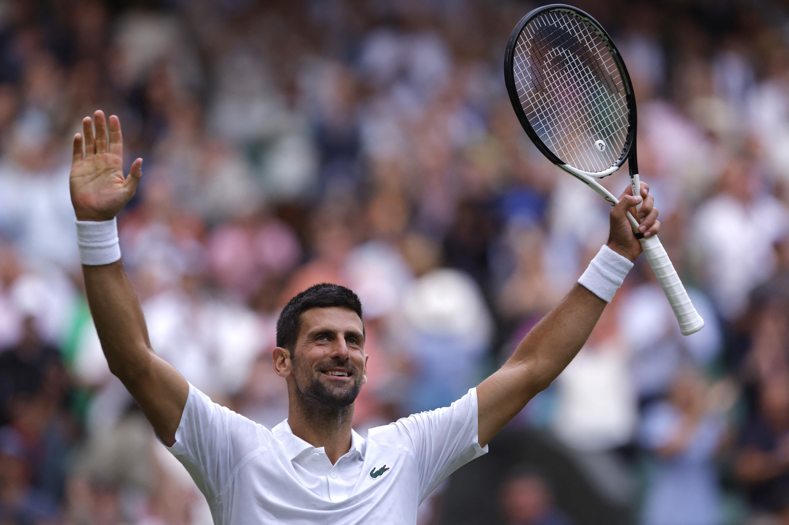
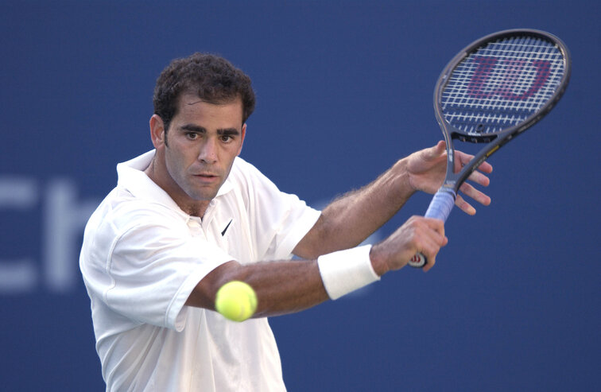

Rafael Nadal
Rafael Nadal Parera is a Spanish professional tennis player. He has been ranked world No. 1 in singles by the Association of Tennis Professionals for 209 weeks, and has finished as the year-end No. 1 five times. Nadal has won 22 Grand Slam men's singles titles.
Novak Djokovic
Novak Djokovic (Serbian: Новак Ђоковић, Novak Đoković, pronounced [nôvaːk dʑôːkovitɕ] ⓘ;[6] born 22 May 1987) is a Serbian professional tennis player. He has been ranked No. 1 for a record total of 428 weeks in a record 13 different years by the ATP, and finished as the year-end No. 1 a record eight times.[7] Djokovic has won a record 24 Grand Slam men's singles titles, including a record ten Australian Open titles. Overall, he has won 99 singles titles, including a record 72 Big Titles: 24 majors, a record 40 Masters, a record seven year-end championships, and an Olympic gold medal.

Roger Federer
Roger Federer (German pronunciation: [ˈrɔdʒər ˈfeːdərər]; born 8 August 1981) is a Swiss former professional tennis player. He was ranked world No. 1 in singles by the Association of Tennis Professionals (ATP) for 310 weeks, including a record 237 consecutive weeks, and finished as the year-end No. 1 five times. He won 103 singles titles on the ATP Tour, the second most of all time, including 20 major men's singles titles (among which a record eight men's singles Wimbledon titles, and an Open Era joint-record five men's singles US Open titles) and six year-end championships.
Pete Sampras
Pete Sampras (born August 12, 1971) is an American former world No. 1 tennis player.[3] His professional career began in 1988 and ended at the 2002 US Open, which he won, defeating his longtime rival Andre Agassi in the final. Sampras won 14 major singles titles during his career, which was an all-time record at the time of his retirement: a then-record seven Wimbledon titles, two Australian Opens and a joint Open Era record five US Open titles. He won 64 ATP Tour-level singles titles in total. He first reached the world No. 1 ranking in 1993, and held that position for a total of 286 weeks (third all time), including an Open Era record of six consecutive year-end No. 1 rankings from 1993 to 1998.